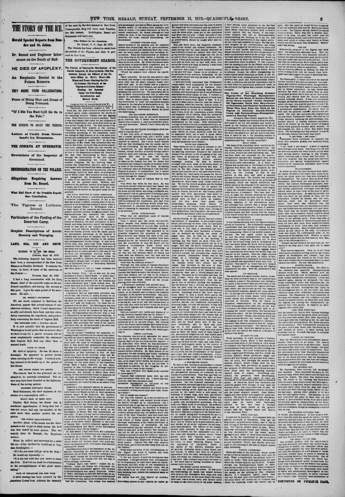
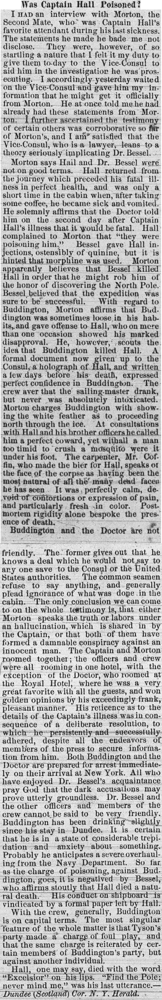

HN HN-224 · October 16, 1873 · Medicine & Public Health > Poisoning, Toxicology & Contamination > Toxic substances
1873 New York Herald 'Story of Ice' citation gives page 5 in one record and page 12 in another.
Source: Rensselaer Union, p. 2, Dundee correspondent of the New York Herald — original page; Smithsonian's surviving expedition records.
Report: A correspondent reported William Morton's assertion that Captain Hall fell ill after drinking coffee, had complained he was being poisoned, and received injections from expedition physician Emil Bessels. The writer said other witnesses' accounts appeared to support suspicion but also gave opposing explanations; another officer and Bessels said Hall died naturally. The article repeatedly acknowledged the possibility that the accusation was false.
Assessment: Contested testimony and serious contemporary suspicion—not proof Bessels poisoned Hall. Compare the earlier Tyson account (HN-222); medical, forensic and naval records must be examined before deciding causation. Dispute documented; conclusion open.
Identity-review candidate peers: HN-223:Algorithmic
Class: Metadata/identity (M)
Recorded difference/concern: 1873 New York Herald 'Story of Ice' citation gives page 5 in one record and page 12 in another.
Assessment: Pagination/catalog inconsistency, not historical claim disagreement.
Source links: https://chroniclingamerica.loc.gov/lccn/sn83030313/1873-09-21/ed-1/seq-5/ https://ohiomemory.org/digital/collection/p16007coll22/id/53921/ https://okellyarchive.com/sites/default/files/documents/reporting-cuba/201_1873-06-10_6.pdf
Authentic images retrieved from Library of Congress / Chronicling America and Hoosier State Chronicles (Indiana State Library). Article crops are located using the archive's own OCR word coordinates and rendered at native crop resolution; article clips are assembled from the archive's own article-block images; page images marked "archive tiles" are stitched from the archive's own tiled page service at its 256-px tile cap; page images marked "issue PDF" are single pages rasterised from the archive's own issue PDF, with the page chosen by matching the headline against the PDF's text layer; page scans are reduced-size access renditions. No images were generated, mocked, or retouched.


Not yet acquired. Queued for provider-specific acquisition testing (see source-acquisition manifest).
URL (preserved verbatim): https://newspapers.library.in.gov/?a=d&d=RLUN18731016.2.5
Saved research report: Historical_Newspaper_Event_Research_203-227_2026-10-22.md
Evidence note: A newspaper report means a historical publication made a claim; it does not establish that claim as fact. Contemporary reporting is separated from later scholarly context and our own assessment.